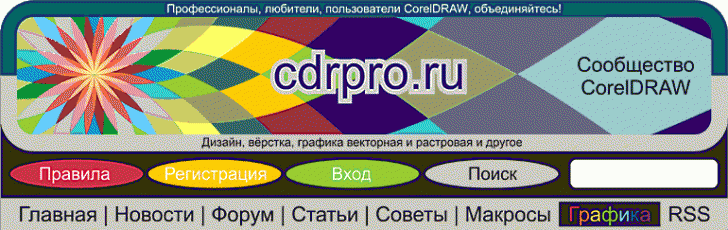

Дизайн и вёрстка cdrpro.ru
Sancho / 19.02.2010, 00:19/15:26
С недавних пор меня смущает текущий дизайн, да и вёрстка тоже, этого сайта. Я хочу сделать ре-дизайн. Есть ли какие то идеи или замечания? было бы весьма кстати. Хотелось бы услышать мысли как постоянных участников, так и вновь прибывших.
JS Включён. Кнопка "Скачать" НЕ работает. И вообще, работает всё и на всех посещаемых мной сайтах кроме кнопки "Скачать" на этом.
За избавление от Защиты от слепых - Спасибо.
Рекламодателя сменить на более демократичного.
У меня складывается ощущение, что сайт создан по большей части ради рекламы CdrPreflight. Следовательно, как минимум, от части коммерческий. Следовательно: от спонсорства опка воздержусь.
А вы не офигели? Вам бесплатно доступно много макросов, дополнений, статей, уроков... на всё это было потрачено уйма времени, за которое ни кто не платил. А вы приходите, и ещё возмущаетесь и указываете. Продолжите в подобном тоне - в бан по IP навсегда. Так что будьте добры, решайте свои проблемы с кнопкой скачать сами, а не нравится реклама - знаете где дверь. На этом точка! :)
Возможно если у кого то есть идеи как оформить что бы было красиво, понятно и удобно, можете высказываться в графической форме.
Сам же говорит: "притёрся".
Так, разве некоторые соображения:
– чёрный цвет на баннере понятно–лёгкий способ добиться контраста. Но с другой стороны, чёрный – это часто символ траура. Новогодний баннер очень даже порадовал. А может так и практиковать сезонную смену цветовой гаммы баннера?
– кнопку перехода к другим страницам вверху ленты убрать, только место зря занимает. Обычно переход делают после просмотра текущей страницы. А её же внизу ленты сделать чуть крупнее, такую же, как рядом, кнопка перехода к другим разделам.
– может стоит ввести в форум новую ветку "Не наломай дров или советы начинающим дизайнерам и верстальщикам", где желающие могли бы делиться некоторым печальным опытом, чтобы других предостеречь от дурацких ошибок.
– векторный арт дополнить разделом "Клипарты", чтобы некоторые картинки не приковывали к позорному столбу "не прошедшие в векторный арт", а может кому и пригодится. Зато часть откровенно слабоватых работ не окажется в "векторном арте" (то бишь рядом с искусством).
----------------------------------------------------------------------------------------
Мы к вам хорошо!
Если я увижу достойный вариант дизайна, я сделаю именно его, а не "по своему".
Веток форма итак много, а толку мало. 99% думают только о себе -- задали вопрос, получили ответ и убежали. А поделиться чем то это выше человеческих сил видимо, лучше в контакте конечно же поторчать, на ферме или чё там ещё есть. :D
А по поводу векторного арта вообще отдельный разговор надо устраивать. Я вообще всю графику хочу наоборот объединить в один раздел, и с исходниками и без. Не вижу смысла от дублирования почти одной и той же сущности. Графика она и есть графика. Только тут опять же, как качать так все, а как что своё выложить так увольте )))
П.С. Вообще тенденции интернета меня не радуют. Все думают только о себе, а на остальных насрать.
П.П.С. Тебе Solowejka зачёт за то, что что-то пишешь, делишься какими то наблюдениями, пусть даже это и не всегда правильные наблюдения. Все мы растём, все учимся.
А по поводу графической части -- почему нет? может действительно кто то тут среди нас гений веб-дизайна, или хотя бы учится. Пусть даже небольшая идея зачерпнутая из какого то предложения -- уже хорошо!
Предлагаю сделать графическую часть >>> как окно программы КорелДро с Велкоме скрином где будут вынесены последние и актуальные новости... а потом каждый желающий вытаскивает нужные ему докеры из меню Тулс(и прочих меню) -- это могут быть докеры про вектор арт, про сбор ошибок, видеоуроки и просто уроки --короче их может быть множество... и сохраняет свой "рабочий стол" на сайте(вот вам и регистрация)... при следующим посещении(входе) имеем свой неповторимый вид сайта(или сбрасываем до дефолта) ... идея канешно сырая, но... доколе мы будем восхищаться сайтом башни Федерация???

Страницы